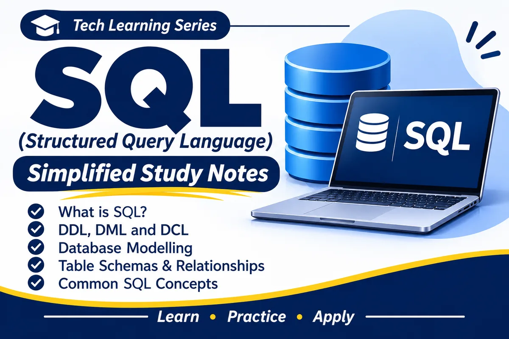

SQL simplified: study notes for beginners

These notes explain what SQL is, the three main groups of SQL commands, how to turn a real-world problem into database tables, and two common ways of modelling data.
1. What is SQL?
SQL stands for Structured Query Language.
- SQL is a language used to communicate with relational databases.
- It is used to create, manage, retrieve, update and delete data in databases.
- It lets users interact with the tables in a database.
Example: a school database can use SQL to store and manage student records, staff details, courses and classrooms.
2. The three main categories of SQL
Data Definition Language (DDL)
DDL defines or changes the structure of a database. It is commonly used by database administrators and database engineers.
| Command | Function |
|---|---|
| CREATE | Creates a database or table |
| ALTER | Modifies an existing table |
| DROP | Deletes a table or database structure |
| TRUNCATE | Removes all records from a table |
CREATE TABLE Students (
Student_id INT PRIMARY KEY,
Firstname VARCHAR(255),
Lastname VARCHAR(255)
);Data Manipulation Language (DML)
DML works with the data stored inside tables. It is commonly used by data analysts and database users, and it supports CRUD operations.
| Letter | Meaning | SQL command |
|---|---|---|
| C | Create | INSERT |
| R | Retrieve | SELECT |
| U | Update | UPDATE |
| D | Delete | DELETE |
-- CREATE (insert a record)
INSERT INTO Students
(Student_id, Firstname, Lastname)
VALUES (1, 'John', 'James');
-- READ (retrieve records)
SELECT * FROM Students;
-- UPDATE (modify a record)
UPDATE Students
SET Firstname = 'Peter'
WHERE Student_id = 1;
-- DELETE (remove a record)
DELETE FROM Students
WHERE Student_id = 1;Remember: in CRUD, Create means inserting a record, not creating a table.
Data Control Language (DCL)
DCL controls access and permissions. It is commonly handled by database administrators and database engineers.
- GRANT gives a user permission to access or perform certain operations on a database.
- REVOKE removes permissions that were granted before.
GRANT SELECT ON Students TO analyst;
REVOKE SELECT ON Students FROM analyst;3. Modelling real-world problems as database problems
Database modelling means taking information from a real-world situation and organising it into tables.
Example: a tech academy wants a database called academy_db to manage students, staff, courses and classrooms. Each of these becomes a table.
4. Creating table schemas
A table schema describes the structure of a table: its columns, data types and constraints.
Students table
| Column | Data type | Constraint |
|---|---|---|
| Student_id | INT | PRIMARY KEY |
| Firstname | VARCHAR(255) | |
| Lastname | VARCHAR(255) | |
| Gender | VARCHAR(10) | |
| Phonenumber | TEXT | |
| Age | INT | |
| Course_id | INT | FOREIGN KEY |
Courses table
| Column | Data type | Constraint |
|---|---|---|
| Course_id | INT | PRIMARY KEY |
| Title | TEXT |
Understanding the relationship
- Student_id uniquely identifies each student.
- Course_id uniquely identifies each course.
- Course_id in the Students table is a foreign key that references the Courses table.
Courses
| Course_id | Title |
|---|---|
| 1 | Data Analysis |
| 2 | Web Development |
| 3 | Cybersecurity |
Students
| Student_id | Firstname | Course_id |
|---|---|---|
| 101 | John | 1 |
| 102 | Mary | 2 |
| 103 | David | 1 |
John and David are enrolled in Data Analysis, while Mary is enrolled in Web Development.
SQL implementation
CREATE TABLE Courses (
Course_id INT PRIMARY KEY,
Title TEXT
);
CREATE TABLE Students (
Student_id INT PRIMARY KEY,
Firstname VARCHAR(255),
Lastname VARCHAR(255),
Gender VARCHAR(10),
Phonenumber TEXT,
Age INT,
Course_id INT,
FOREIGN KEY (Course_id)
REFERENCES Courses(Course_id)
);Create the Courses table first, because the Students table refers to it.
5. Modelling of tables
There are two common modelling approaches.
A. Flat table modelling
All the information is stored in one table.
| Student_id | Student_name | Course | Staff | Classroom |
|---|---|---|---|---|
| 1 | John | SQL | Mr James | Room A |
| 2 | Mary | Python | Mrs Grace | Room B |
| 3 | David | SQL | Mr James | Room A |
Advantages
- Easy to understand.
- Simple for small datasets.
- Related information is easy to view together.
Disadvantages
- Data is repeated.
- Hard to maintain as the data grows.
- Can lead to inconsistencies.
B. Star schema modelling
In a star schema, a central fact table connects to several dimension tables.
- Fact table: stores measurable events or transactions, such as student enrolments.
- Dimension tables: store descriptive information, such as students, courses, staff and classrooms.
Students
|
|
Courses ---- Enrolments ---- Staff
|
|
ClassroomsAdvantages
- Makes reporting and analysis easier.
- Reduces unnecessary repetition in analytical datasets.
- Helps organise large amounts of data.
- Useful for business intelligence and data warehousing.
6. Test your understanding
Try each question first, then open the answer.
- What does SQL stand for?
- Structured Query Language
- Simple Question Language
- System Query Logic
Show answer
Structured Query Language
- Which SQL category is used to create and modify table structures?
- DML
- DDL
- DCL
Show answer
DDL
- Which command retrieves records from a table?
- INSERT
- UPDATE
- SELECT
Show answer
SELECT
- What does CRUD stand for?
- Create, Read, Update, Delete
- Create, Remove, Undo, Drop
- Copy, Retrieve, Update, Display
Show answer
Create, Read, Update, Delete
- What is the central table in a star schema called?
- Dimension table
- Fact table
- Flat table
Show answer
Fact table
Spotted a mistake in this note? Tell us and we will fix it.